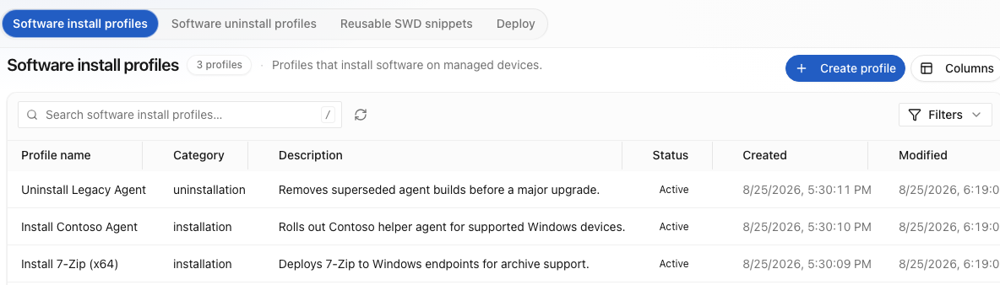

Home / Solutions / IT task automation
By outcome
The work that never justified an automation project.
Individually small, collectively enormous: drive mappings, printer setup, profile resets, certificate renewal, disk cleanup, onboarding sequences, software repair. Nobody funds a project for any one of them, so a human keeps doing all of them.
The issue
Routine work is automated last, and it is most of the work.
What normally happens
Prioritised out, every quarter.
Automation capacity goes to the biggest call drivers, which is rational. The routine request queue is never the biggest single driver — it is fifty small ones — so it never reaches the top of the list, and the estate keeps paying for it in agent minutes.
What Nanoheal does
Small tasks stop being expensive.
Describing a task in plain language and validating it once is cheap enough that the fifty small ones are worth doing. That is the whole reason this category of work finally gets automated.

01 — Software and patch
Deploy, repair, roll back, reclaim.
Install and update across the fleet or a targeted population, with repair for failed installs and rollback when a version misbehaves. Patch is assessed, staged, deployed and then verified on the device rather than inferred from a deployment record.
Because distribution shares the engine with remediation, a failed install is not a report you chase — it is a symptom, and it triggers its own repair. Compliance & Governance →

02 — Requests and lifecycle
Onboarding, offboarding, and everything in between.
A joiner sequence touches the device, the directory, the ITSM record and several SaaS consoles. Automating only the device half leaves the coordination — and the errors — with a human.
Because the context layer reaches the rest of IT without a connector build, the whole sequence runs as one governed action across systems. Orchestration →
03 — Who authors them
The person who knows the task writes it.
Plain language in, sealed capability out. The service desk lead who knows exactly how a printer gets reconfigured does not need an engineer to translate it, and no code is produced that somebody then owns.
Four ways the same workflow can start: a symptom, a forecast, a request, or a schedule. Workflows in plain language →
See a symptom resolve itself.
Bring us your top three call drivers. We'll show you the same three resolving on a live endpoint — with no script written, and nothing left running to watch for them